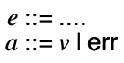
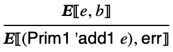
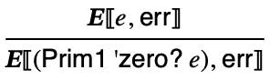
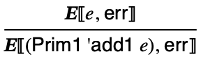
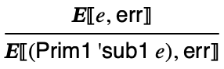

10 Extort: when errors exist
The greatest mistake is to imagine that we never err.
10.1 Errors
We have added multiple, disjoint types, but mostly swept issues of errors under the rug by considering type mismatches as meaningless. Now let’s redesign the semantics to specify the error behavior of such programs.
We’ll call it Extort.
Nothing changes in the syntax of Extort from the previous language, although we will need to talk about two kinds of results from evaluating programs: values and errors. We will say that evaluation produces an answer, which is either a value or error:

10.2 Meaning of Extort programs
Languages adopt several approaches to type mismatches:
Prohibit such programs statically with a type system (e.g. OCaml, Java)
Coerce values to different types (e.g. JavaScript)
Signal a run-time error (e.g. Racket)
Leave the behavior unspecified (e.g. Scheme, C)
We’ve previously seen the last approach. Now let’s do what Racket does and signal an error.
The meaning of Extort programs that have type errors will now be defined as 'err:



  

Now what does the semantics say about (add1 #f)? What about (if 7 #t -2)?
The signature of the interpreter is extended to produce answers. Each use of a Racket primitive is guarded by checking the type of the arguments and an error is produced if the check fails. Errors are also propagated when a subexpression produces an error:
#lang racket (provide interp) (require "ast.rkt" "interp-prim.rkt") ;; type Answer = Value | 'err ;; type Value = ;; | Integer ;; | Boolean ;; | Character ;; | Eof ;; | Void ;; Expr -> Answer (define (interp e) (match e [(Int i) i] [(Bool b) b] [(Char c) c] [(Eof) eof] [(Prim0 p) (interp-prim0 p)] [(Prim1 p e0) (match (interp e0) ['err 'err] [v (interp-prim1 p v)])] [(If e1 e2 e3) (match (interp e1) ['err 'err] [v (if v (interp e2) (interp e3))])] [(Begin e1 e2) (match (interp e1) ['err 'err] [_ (interp e2)])]))
#lang racket (provide interp-prim0 interp-prim1) ;; Op0 -> Answer (define (interp-prim0 op) (match op ['read-byte (read-byte)] ['peek-byte (peek-byte)] ['void (void)])) ;; Op1 Value -> Answer (define (interp-prim1 op v) (match op ['add1 (if (integer? v) (add1 v) 'err)] ['sub1 (if (integer? v) (sub1 v) 'err)] ['zero? (if (integer? v) (zero? v) 'err)] ['char? (char? v)] ['char->integer (if (char? v) (char->integer v) 'err)] ['integer->char (if (codepoint? v) (integer->char v) 'err)] ['eof-object? (eof-object? v)] ['write-byte (if (byte? v) (write-byte v) 'err)])) ;; Any -> Boolean (define (codepoint? v) (and (integer? v) (or (<= 0 v 55295) (<= 57344 v 1114111))))
We can confirm the interpreter computes the right result for the examples given earlier:
Examples
> (interp (Prim1 'add1 (Bool #f))) 'err
> (interp (Prim1 'zero? (Bool #t))) 'err
> (interp (If (Prim1 'zero? (Bool #f)) (Int 1) (Int 2))) 'err
The statement of correctness stays the same, but now observe that there is no way to crash the interpreter with any Expr value.
10.3 A Compiler for Extort
Suppose we want to compile (add1 #f), what needs to happen? Just as in the interpreter, we need to check the integerness of the argument’s value before doing the addition operation.
The runtime system is written with a level of indirection between raise_error and the code that prints and exits in error_exit; this is done so that the testing framework can intercede and replace the error function, but it can be ignored.
#include <stdio.h> #include <stdlib.h> #include "values.h" #include "print.h" #include "runtime.h" FILE* in; FILE* out; void (*error_handler)(); void error_exit() { printf("err\n"); exit(1); } void raise_error() { return error_handler(); } int main(int argc, char** argv) { in = stdin; out = stdout; error_handler = &error_exit; val_t result; result = entry(); print_result(result); if (val_typeof(result) != T_VOID) putchar('\n'); return 0; }
Most of the work of error checking happens in the code emitted for primitive operations. Whenever an error is detected, control jumps to a label called 'err that immediately calls raise_error:
#lang racket (provide (all-defined-out)) (require "ast.rkt" "types.rkt" a86/ast) (define rax 'rax) ; return (define rdi 'rdi) ; arg (define r8 'r8) ; scratch in +, - (define r9 'r9) ; scratch in assert-type ;; Op0 -> Asm (define (compile-op0 p) (match p ['void (seq (Mov rax val-void))] ['read-byte (seq (Call 'read_byte))] ['peek-byte (seq (Call 'peek_byte))])) ;; Op1 -> Asm (define (compile-op1 p) (match p ['add1 (seq (assert-integer rax) (Add rax (value->bits 1)))] ['sub1 (seq (assert-integer rax) (Sub rax (value->bits 1)))] ['zero? (let ((l1 (gensym))) (seq (assert-integer rax) (Cmp rax 0) (Mov rax val-true) (Je l1) (Mov rax val-false) (Label l1)))] ['char? (let ((l1 (gensym))) (seq (And rax mask-char) (Xor rax type-char) (Cmp rax 0) (Mov rax val-true) (Je l1) (Mov rax val-false) (Label l1)))] ['char->integer (seq (assert-char rax) (Sar rax char-shift) (Sal rax int-shift))] ['integer->char (seq (assert-codepoint) (Sar rax int-shift) (Sal rax char-shift) (Xor rax type-char))] ['eof-object? (eq-imm val-eof)] ['write-byte (seq (assert-byte) (Mov rdi rax) (Call 'write_byte) (Mov rax val-void))])) ;; Op2 -> Asm (define (compile-op2 p) (match p ['+ (seq (Pop r8) (assert-integer r8) (assert-integer rax) (Add rax r8))] ['- (seq (Pop r8) (assert-integer r8) (assert-integer rax) (Sub r8 rax) (Mov rax r8))])) ;;;;;;;;;;;;;;;;;;;;;;;;;;;;;;;;;;;;;; (define (assert-type mask type) (λ (arg) (seq (Mov r9 arg) (And r9 mask) (Cmp r9 type) (Jne 'err)))) (define (type-pred mask type) (let ((l (gensym))) (seq (And rax mask) (Cmp rax type) (Mov rax (value->bits #t)) (Je l) (Mov rax (value->bits #f)) (Label l)))) (define assert-integer (assert-type mask-int type-int)) (define assert-char (assert-type mask-char type-char)) (define (assert-codepoint) (let ((ok (gensym))) (seq (assert-integer rax) (Cmp rax (value->bits 0)) (Jl 'err) (Cmp rax (value->bits 1114111)) (Jg 'err) (Cmp rax (value->bits 55295)) (Jl ok) (Cmp rax (value->bits 57344)) (Jg ok) (Jmp 'err) (Label ok)))) (define (assert-byte) (seq (assert-integer rax) (Cmp rax (value->bits 0)) (Jl 'err) (Cmp rax (value->bits 255)) (Jg 'err))) ;; Imm -> Asm (define (eq-imm imm) (let ((l1 (gensym))) (seq (Cmp rax imm) (Mov rax val-true) (Je l1) (Mov rax val-false) (Label l1))))
All that’s left for the top-level compile function to declare an external label 'raise_error that will be defined by the run-time system and to emit a label called 'err that calls raise_error, otherwise this part of the compiler doesn’t change:
#lang racket (provide (all-defined-out)) (require "ast.rkt" "types.rkt" "compile-ops.rkt" a86/ast) ;; Registers used (define rax 'rax) ; return (define rsp 'rsp) ; stack ;; Expr -> Asm (define (compile e) (prog (Extern 'peek_byte) (Extern 'read_byte) (Extern 'write_byte) (Extern 'raise_error) (Global 'entry) (Label 'entry) (Sub 'rsp 8) (compile-e e) (Add 'rsp 8) (Ret) ;; Error handler (Label 'err) (Call 'raise_error))) ;; Expr -> Asm (define (compile-e e) (match e [(Int i) (compile-value i)] [(Bool b) (compile-value b)] [(Char c) (compile-value c)] [(Eof) (compile-value eof)] [(Prim0 p) (compile-prim0 p)] [(Prim1 p e) (compile-prim1 p e)] [(If e1 e2 e3) (compile-if e1 e2 e3)] [(Begin e1 e2) (compile-begin e1 e2)])) ;; Value -> Asm (define (compile-value v) (seq (Mov rax (value->bits v)))) ;; Op0 -> Asm (define (compile-prim0 p) (compile-op0 p)) ;; Op1 Expr -> Asm (define (compile-prim1 p e) (seq (compile-e e) (compile-op1 p))) ;; Op2 Expr Expr -> Asm (define (compile-prim2 p e1 e2) (seq (compile-e e1) (Push rax) (compile-e e2) (compile-op2 p))) ;; Expr Expr Expr -> Asm (define (compile-if e1 e2 e3) (let ((l1 (gensym 'if)) (l2 (gensym 'if))) (seq (compile-e e1) (Cmp rax val-false) (Je l1) (compile-e e2) (Jmp l2) (Label l1) (compile-e e3) (Label l2)))) ;; Expr Expr -> Asm (define (compile-begin e1 e2) (seq (compile-e e1) (compile-e e2)))
Examples
> (define (show e) (displayln (asm-string (compile-e (parse e))))) > (show '(add1 #f))
default rel
section .text
mov rax, 7
mov r9, rax
and r9, 1
cmp r9, 0
jne _err
add rax, 2
Examples
> (define (tell e) (match (asm-interp (compile (parse e))) ['err 'err] [b (bits->value b)])) > (tell #t) #t
> (tell #f) #f
> (tell '(zero? 0)) #t
> (tell '(zero? -7)) #f
> (tell '(if #t 1 2)) 1
> (tell '(if #f 1 2)) 2
> (tell '(if (zero? 0) (if (zero? 0) 8 9) 2)) 8
> (tell '(if (zero? (if (zero? 2) 1 0)) 4 5)) 4
> (tell '(add1 #t)) 'err
> (tell '(sub1 (add1 #f))) 'err
> (tell '(if (zero? #t) 1 2)) 'err
Since the interpreter and compiler have well defined specifications for what should happen when type errors occur, we can test in the usual way again:
Examples
> (define (check-correctness e) (check-equal? (match (asm-interp (compile e)) ['err 'err] [b (bits->value b)]) (interp e) e)) > (check-correctness (Prim1 'add1 (Int 7))) > (check-correctness (Prim1 'add1 (Bool #f)))